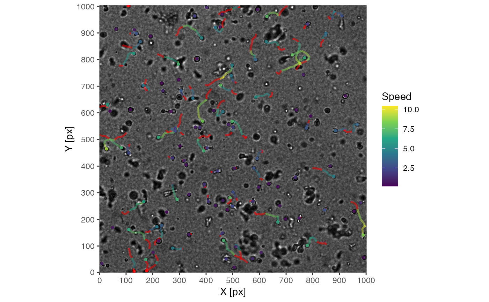
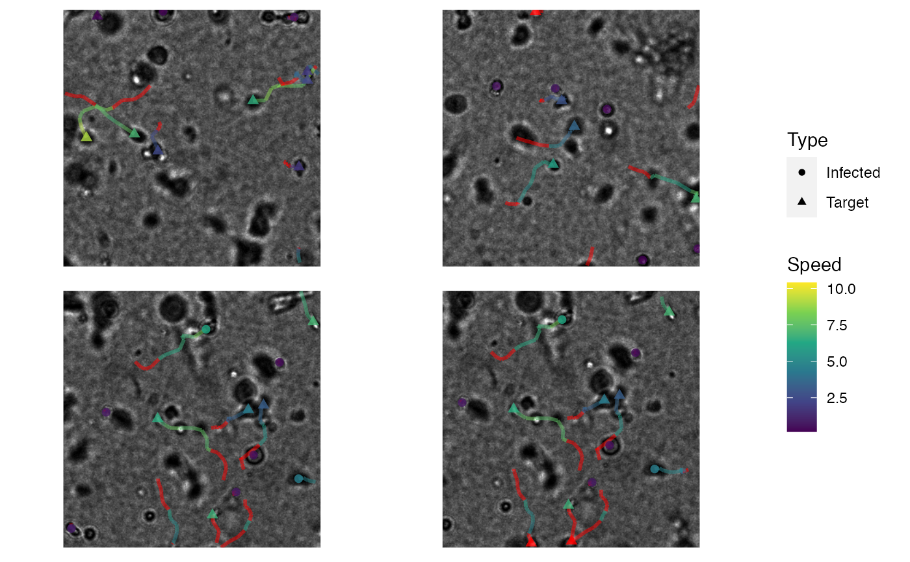

| df |
dataframe of the form: df(track, time, X, Y, (Z,) mapping_parameters, ...) |
| image |
character: filename of image
|
| stack |
logical: default: FALSE, single image file provided if time-resolved imagestack is used, set: TRUE
|
| image.depth |
numeric: set image bit-depth; just important if Z-projections are calculated
|
| image.normalize |
logical: normalize image
|
| frame |
integer: frame to be mapped
|
| tracks |
vector: defining tracks to be displayed
|
| par.map |
character: specifying parameter in df to be visualized by color
|
| par.shape |
character: specifying parameter in df to be mapped on shape
|
| par.display |
display option for mapping; default: TRUE, mapping is disable with: FALSE |
| par.max |
numeric: defining upper range of color mapping
|
| par.min |
numeric: defining lower range of color mapping
|
| par.unit |
character: unit of the numeric mapped parameter
|
| crop |
logical: option for cropping images; default: FALSE
|
| sub.img |
logical: option for creating sub-images from specified tracks or pre-filtered df; default: FALSE
|
| sub.window |
numeric: size of the sub-images in pixels
|
| sub.col |
numeric: number of columns in which sub-images are arranged
|
| tracks.size |
numeric: size of tracks
|
| tracks.alpha |
numeric: transparency of tracks
|
| tracks.length |
numeric: length of tracks (in frames)
|
| tracks.label |
logical: when sub.img is used, display or hide track label
|
| tracks.label.x |
numeric: when sub.img is used, set x-position of label
|
| tracks.label.y |
numeric: when sub.img is used, set y-position of label
|
| points.size |
numeric: size of points
|
| points.alpha |
numeric: transparency of points
|
| points.stat |
character: display statistic; default: 'echo', for blurring; without blurring 'identity'
|
| points.shape |
numeric: set shape from ggplot2 shape palette
|
| axis.tick |
numeric: axis ticks in px
|
| axis.display |
logical: display axis
|
| axis.labs |
logical: display labs
|
| unit |
character: setting name of unit; default: 'px'
|
| scaling |
numeric: scaling factor for unit; default: 1
|
| dimensions |
numeric: specify whether the images are 2D or 3D.
If 3D is selected the data is assumed to be in the form: df(track, time, X, Y, Z, mapping paramters, ...)
|
| manual.z |
numerice: specify Z-plane to be visualized if no projection or sub windows are used
|
| scale.bar |
logical: show scalebar; default: FALSE
|
| scale.width |
numeric: width of scalebar; default: 40
|
| scale.height |
numeric: height of scalebar; default: 10
|
| scale.x |
numeric: distance from left border of the image towards scalebar
|
| scale.y |
numeric: distance from bottom border of the image towards scalebar
|
| scale.color |
character: specify color from R-color palette or hexcode
|
| interactive |
logical: return the plot as an interactive plotly object. Not supported when using
sub.img or crop modes.
|
# import tracking data
data('hiv_motility')
# get image files
images <- hiv_motility_images()
# run visustat_frame with default settings
visustat_frame(hiv_motility, image=images[15], frame=15, image.normalize=1)
#> par.map not specified
#> defaulted to: speed
#> assuming: df(track, time, X, Y, mapping_parameters, ...)

# run visustat_frame with specified settings
visustat_frame(hiv_motility,
image = images[15],
frame = 15,
tracks = c(48, 66, 102, 108),
sub.img = TRUE,
sub.col = 2,
sub.window= 300,
par.map ='speed',
par.shape ='type',
points.size=2,
image.normalize=1
)
